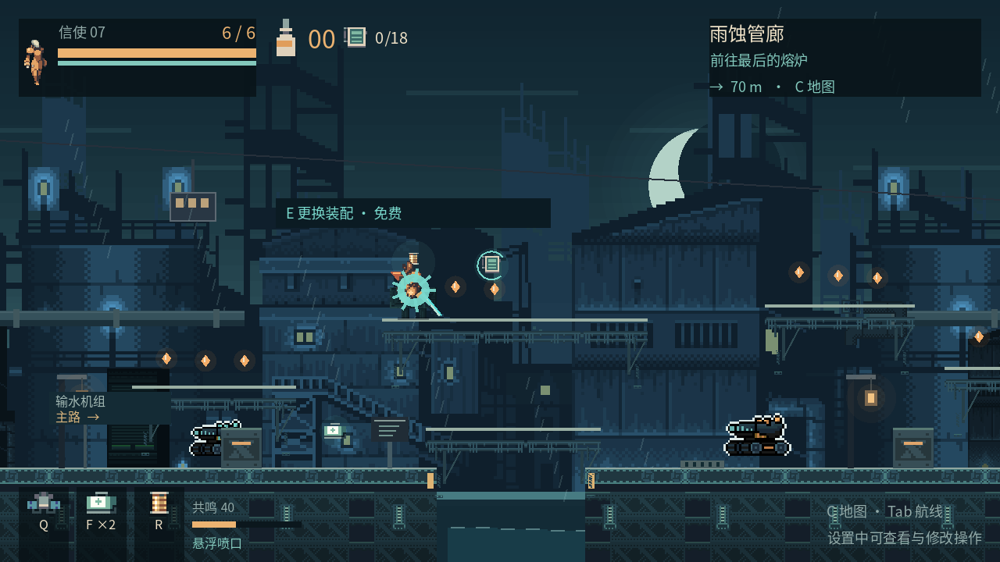

北线余烬
风蚀前哨 → 雨蚀管廊 → 最后的熔炉
终点首领 / 熔炉看守穿过沉睡的工业遗迹，唤醒旧世界的航线。
一把旧刀，一颗火种，一段尚未结束的旅途。

建议使用电脑，支持键盘与鼠标
首次加载需要片刻；完成后点击游戏画面开始操作
风蚀前哨 → 雨蚀管廊 → 最后的熔炉
终点首领 / 熔炉看守潮汐船坞 → 断弦高架 → 风暴之眼
击败熔炉看守后，接通苍穹航线 / 风暴织机近战与弹反积累共鸣：60 点亮高处支路中继并选择战术装配，100 释放爆发。支持手柄，设置中可改键。按攻击键可收起通讯。C 查看机关编号与区域路线。看清攻击预警，抓住首领恢复时的反击窗口。首次接近中继站会恢复生命并保存旅途。进度保存在当前浏览器；无痕模式或清除站点数据可能使进度丢失。网页版与桌面版的存档相互独立。